14. Extrusió d’esbossos imbricats¶
En aquesta pràctica, crearem esbossos per extendre -los, situant alguns esbossos a altres i, per tant, formaran figures més complexes.
; BR |
Obrim l’aplicació ** Freecad ** i fem clic a la icona per crear un document ** nou ** | Icon-new-Document |.
Seleccionem el disseny de la part del banc de treball ** **
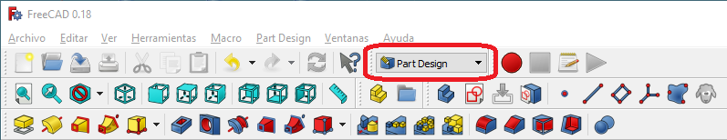
A continuació, seleccionem per crear un esbós nou.
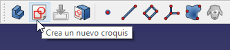
I vam triar el pla XY com a pla base per col·locar el nou esbós.
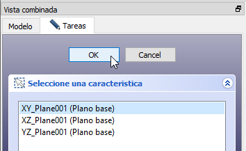
A la pantalla apareixerà una graella per dibuixar dues dimensions.
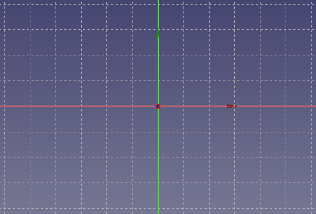
; BR |
Aleshores dibuixarem un objecte senzill, un octàgon.
Primer ajustem els controls d’edició a la pestanya Task, de manera que el dibuix s’ajusti a la xarxa.
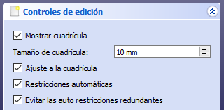
Ara crearem un Octagon amb la icona de Polyline | Polilinea |.
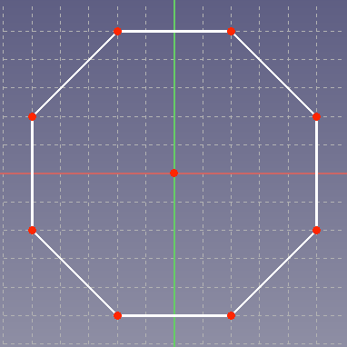
Si ens equivoquem quan posem els punts, un cop finalitzat el dibuix, podem fer clic als punts i arrossegar -los amb el ratolí a la seva posició correcta.
Un cop acabats, feu clic a les tasques ** ** i premeu el botó `` tanca ''. El nostre dibuix es veurà a la vista de plantes com a la figura següent.
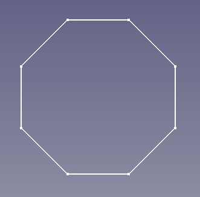
Si no podeu veure el dibuix, feu clic a la icona de "Ajustar el contingut complet a la pantalla" | Icon-ajustar-contemplate |.
; BR |
Per obtenir una peça de tres dimensions, extreuem el nostre esbós seleccionant la icona corresponent.
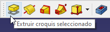
O seleccionant al disseny de part ...
En els paràmetres d'extrusió, hem escollit el nivell o l'alçada que volem per a la peça, en aquest cas ** 50 mil·límetres **.
Si canviem en perspectiva, podem veure el nostre Octagon en tres dimensions.
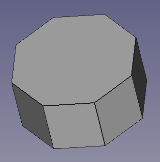
; BR |
Ara seleccionarem l’àrea superior de l’Octagon fent clic sobre ella. La zona canviarà de color verd.
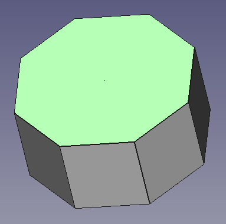
Un cop seleccionada la cara superior, feu clic a la icona de la creació de croquis.
Aquesta vegada, l’esbós es dibuixarà a la cara seleccionada, no a terra.
Ajustem els controls d’edició perquè s’ajustin a la xarxa.
I dibuixem un altre octagon més petit al primer octàgon.
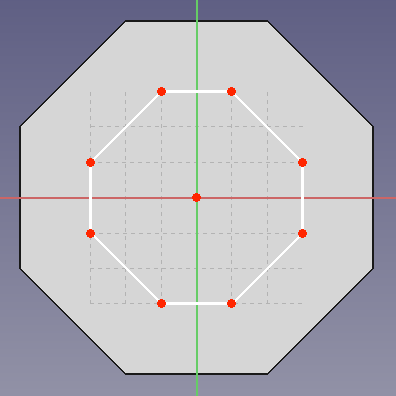
Un cop acabats, feu clic a les tasques ** ** i premeu el botó `` tanca ''. El nostre dibuix es veurà com a la figura següent.
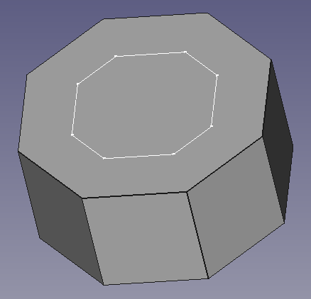
; BR |
A continuació, extroem el nou esbós per formar una nova figura al primer. Premeu la icona corresponent.
O seleccionem al disseny de part ...
En els paràmetres d'extrusió, hem escollit el nivell o l'alçada que volem per a la peça, en aquest cas ** 50 mil·límetres **.
La peça es veurà com a la imatge següent.
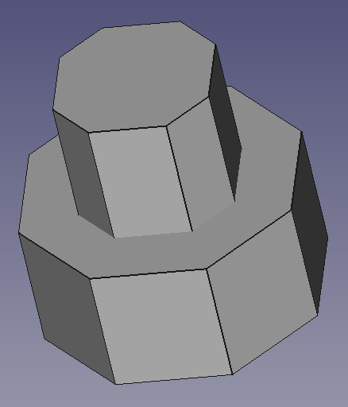
; BR |
Ara generarem un buidatge ** a la peça creada. Comencem seleccionant la cara superior del nostre objecte en tres dimensions.
Un cop seleccionada la cara superior, creem un esbós nou.
Ajustem els controls d’edició perquè s’ajustin a la xarxa.
I dibuixem un quadrat al centre de la peça.
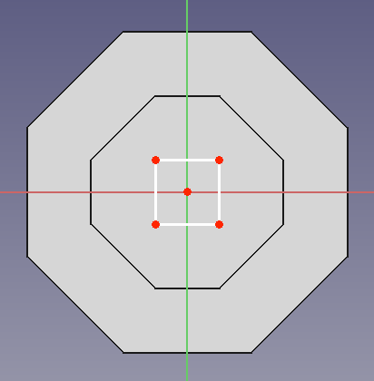
Un cop acabats, feu clic a les tasques ** ** i premeu el botó `` tanca ''. El nostre dibuix es veurà com a la figura següent.
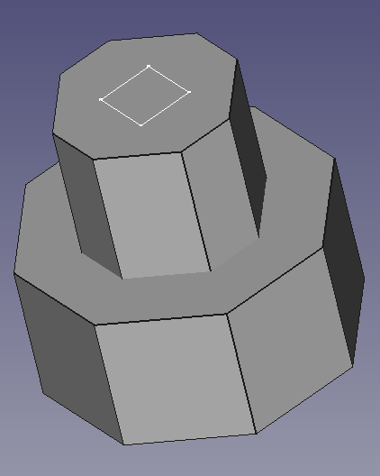
; BR |
A continuació ** Generem un forat ** a partir de l’esbós dibuixat a la icona ** de buidatge **.
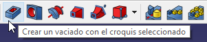
O seleccionant al disseny de part ...
Un cop pressionat, canviem els paràmetres de buidatge de manera que el forat ** creui tots els objectes **.
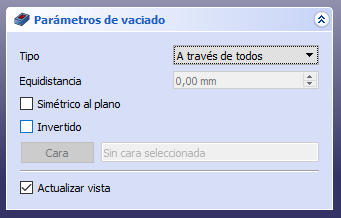
Si feu clic al botó `` `` `, es perforarà com es pot veure a la figura següent.
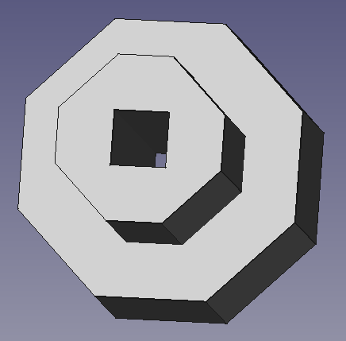
; BR |
Fins ara sempre hem creat esbossos en vertical, des de baix a dalt, però els esbossos es poden col·locar a qualsevol superfície ** com es pot veure a la figura següent.
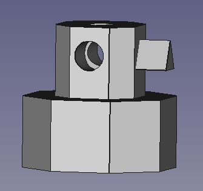
; BR |
Exercicis¶
Creeu una màscara en tres dimensions com la figura.
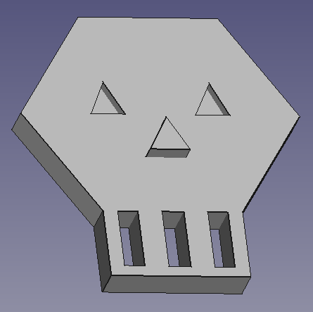
; BR |
Creeu una casa com la figura.
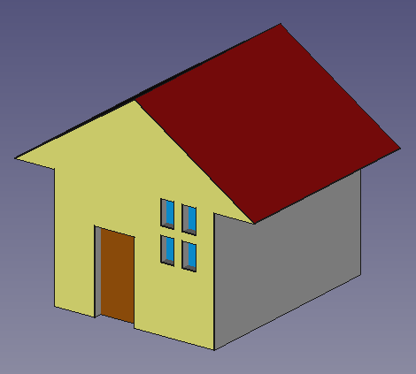
El primer esbós amb el cos de la casa es col·locarà al ** pla xz ** i s’extreu al pla Y.
Els esbossos següents serviran per fer forats al cos principal.
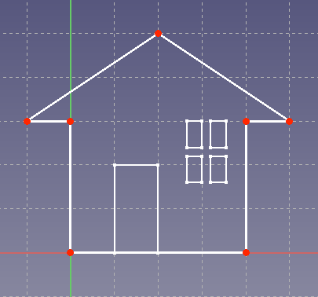
Per donar colors a la casa seguirem aquest procediment.
- Seleccionem la casa completa a la pestanya ** **.
- Amb el botó dret del ratolí al model, seleccionem ** Ajustar els colors **.
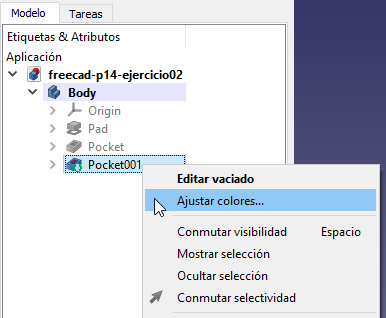
- Seleccionem amb el ratolí la cara de l’objecte que volem canviar de color.
- Seleccionem el color al quadre de diàleg ** tasques **.
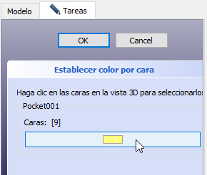
- Feu clic a `` D'acord ''.
; BR |
Creeu un joc de laberint amb pilota com la figura.
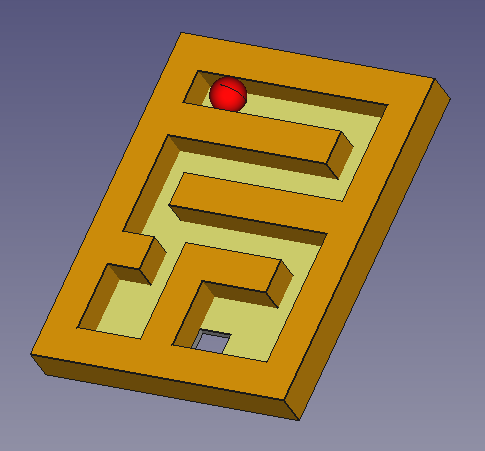
Dels esbossos següents.
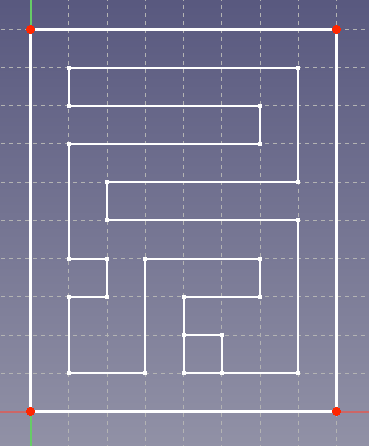
Afegiu una esfera amb el banc de treball ** Part ** i mou l'esfera com es pot veure a la primera xifra.
Finalment, canvieu el color de les cares de l’objecte i l’esfera.
; BR |